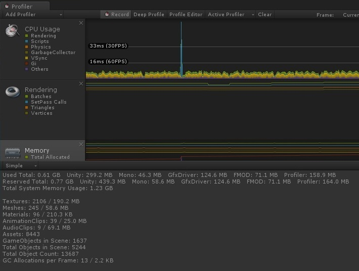

Shader: Texture Blending
A Unity3D shader that blends between two given textures and applies an optional tint color to them. Used primarily for special effects and texture transitioning.
Character head and eye tracking
A script component that enables player tracking for a given character’s eyes and head, based on parametrical constraints.

Room lightmapping
Lightmapping of a single room with static lights for a project targeted for mobile, both Android and iOS.

Optimization: Additive scene loader
A reusable Unity component to use in conjunction with the Cinema Director timeline to additively load scenes in Unity.

VR: Option Selector component
A reusable Unity component for displaying an array of options in a VR environment

Procedural highway generator
Procedural generation of a highway given an array of modules in Unity.